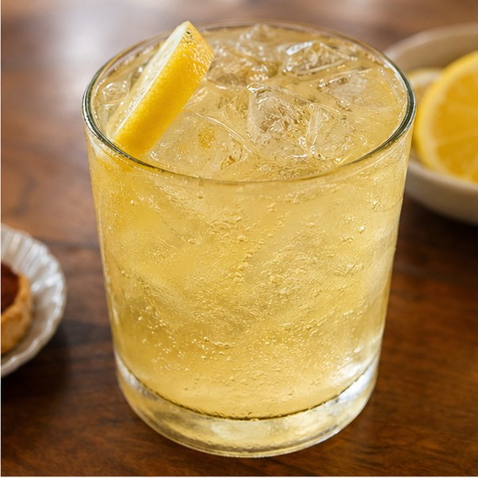
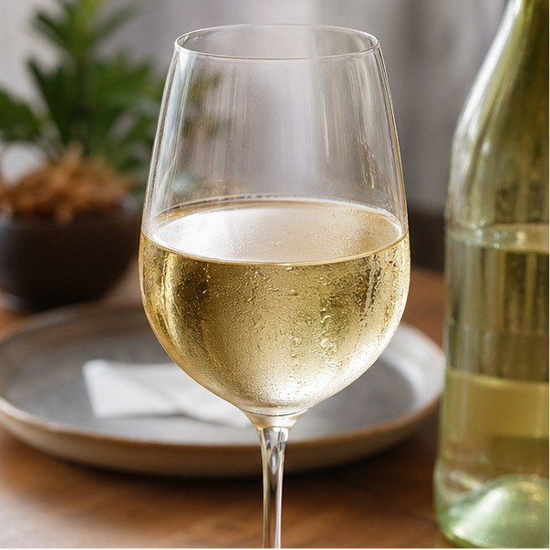

Infusión
Mate
La bebida más tradicional del país, vinculada al encuentro y a la costumbre de compartir.
CRC 1,800

Bebidas tradicionales
Restaurante La Argentina
Opciones calientes, frescas y clásicas
Desde una infusión compartida hasta una copa de vino con carácter, estas opciones completan el recorrido por los sabores argentinos.
Pedido rapido
Las bebidas se guardan junto con las comidas para revisar todo el pedido antes de pagar.
Productos en el carrito: 0
Revisar carritoUna selección pensada para distintos momentos del día y distintos estilos de comida.
Infusión
La bebida más tradicional del país, vinculada al encuentro y a la costumbre de compartir.
CRC 1,800

Refrescante
Mezcla popular en reuniones y celebraciones, especialmente valorada por su perfil amargo y fresco.
CRC 2,900

Vino insignia
Fuerte, intenso y muy ligado a Mendoza, es uno de los emblemas internacionales del vino argentino.
CRC 4,500

Caliente
Leche caliente y chocolate para derretir: una bebida simple, clásica y muy reconfortante.
CRC 2,600

Frutal
Preparado con vino blanco y frutas, es refrescante y muy común en encuentros sociales.
CRC 3,200

Merienda
Un clásico de desayunos y meriendas, muy ligado a la panadería y a los momentos tranquilos del día.
CRC 2,100

Aperitivo
Aperitivo argentino fresco, servido con hielo y limon, muy comun para abrir una comida o compartir en reuniones.
CRC 3,400

Vino blanco
Vino blanco aromatico del norte argentino, ligero y frutal, ideal para acompanar entradas, empanadas o tardes calidas.
CRC 4,300
Elegir bien la bebida mejora mucho la experiencia de la carta.